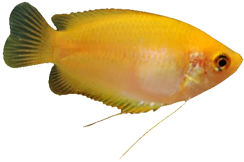
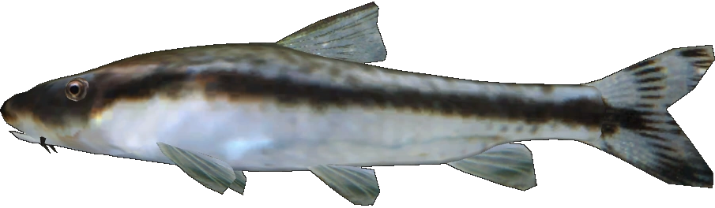
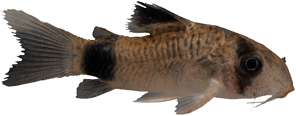

honey gourami
Trichogaster chuna comes from India and Bangladesh and is found in slow-moving ponds full of vegetation. Because of the seasonal monsoon rains, its habitat experiences sudden fluctuations in water chemistry, making it a hardy pet that is great for beginners. Like many gouramis, the honey gourami has a flat, oblong-shaped body with two modified ventral fins that act like long, trailing whiskers.
The dwarf gourami is a different species called Trichogaster lalius that grows to 3 inches (8 cm), whereas the honey gourami is smaller in size and stays around 2 inches (5 cm). While dwarf gouramis have a greater number of color varieties to choose from, their feisty nature means that they can be more prone to bullying other fish in the aquarium.

otocinclus
This genus of South American catfish consists of about 20 species so far and are often referred to as “otos” for short. Common species in the aquarium hobby include O. vittatus (common otocinclus), O. macrospilus (dwarf otocinclus), and O. cocama (zebra oto). Otocinclus typically range from 1.5–2 inches (4–5 cm), and many kinds are known for having a black horizontal line, dark grayish-brown back, and white belly. Unlike many catfish, they are diurnal (or awake during the daytime). They can usually be found grazing or resting on the ground and flat surfaces (e.g., plant leaves, hardscape, and tank walls) until they suddenly zip away to the other side of the tank.These little critters love nothing more than to nibble algae off plants, glass, tank decor, and other smooth surfaces. They specialize in eating softer algae such as soft green algae and brown diatoms and tend to avoid harder types like black beard or green spot algae. They also love to eat the biofilm that grows on driftwood and other botanicals that are slowly breaking down in the aquarium.

panda corydora
The panda corydora comes from the tributaries of larger river systems in Central and South America, and is a peaceful bottom dwelling scavenger. The panda is gold with black patches covering the eyes, dorsal fin, and at the base of the tail. They require a well planted aquarium with plenty of hiding places that provide relief from the light. A smooth sand or gravel substrate is needed because of the easily damaged barbels. They enjoy being in numbers, so a small school of six or more is ideal for these cats.Breeding the Panda Cory Cat has not been documented, but it is suggested that their requirements are similar to the Elegans Cory Cat. The Panda Cory Cat is omnivorous and will require a well balanced diet including dried, flake, frozen, and live foods. Feed a quality flake and pellet food as well as frozen brine and live worms.